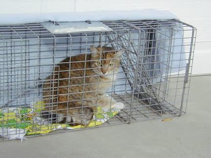

Kastration verhindert Leid: weniger ungewollte Tiere, weniger Stress, weniger Krankheit. Für die meisten Haustierarten ist sie medizinisch und ethisch sinnvoll.
PräventionStreuner stoppenMythen klären

Kastration verhindert Leid, bevor es sichtbar wird.
Auf einen Blick
Kastration ist die Entfernung der Keimdrüsen (Hoden beim Männchen, Eierstöcke bei Weibchen). Sterilisation unterbricht nur die Fortpflanzungswege, ohne die Hormonproduktion zu beenden.
Bei Katzen ist Kastration aus Tierschutzsicht praktisch immer empfohlen.
Bei Hunden ist es eine Einzelfallentscheidung mit Abwägung von Nutzen und Risiken.
Bei Kaninchen: Frühkastration der Rammler und – bei älteren Häsinnen – Kastration zum Tumorschutz.
Etwa 2 Millionen Streunerkatzen in Deutschland sind die Folge fehlender Kastration.
80–250 €typische Katzen-Kastration nach GOT, je nach Geschlecht und Praxis.
vorherPrävention wirkt, bevor Rolligkeit, Kämpfe oder Nachwuchs da sind.
TNRFangen, kastrieren, zurücksetzen ist praktischer Streunerkatzenschutz.
Kastration ist nicht Sterilisation
Zwei verschiedene Eingriffe, die oft verwechselt werden. Kastration entfernt die Keimdrüsen – beim Männchen die Hoden, beim Weibchen die Eierstöcke (und oft die Gebärmutter). Damit endet die Hormonproduktion. Sterilisation durchtrennt nur die Ei- bzw. Samenleiter – die Hormone bleiben aktiv, das Tier bleibt rollig, markiert weiter, streunt weiter. Aus Tierschutzsicht ist Sterilisation bei Haustieren in den meisten Fällen sinnlos.
Rammler: Frühkastration empfohlen. Häsinnen: Tumorschutz bei älteren Tieren
Meerschweinchen
50–100 €
150–300 €
Böcke kastrieren bei Gruppenhaltung mit Weibchen
Ratte
50–100 €
100–250 €
Böcke bei gemischter Gruppenhaltung
Preise nach GOT 2022, Richtwerte. Je nach Praxis, Region und Komplikationen kann es teurer werden.
Die häufigsten Gegenargumente – und warum sie nicht halten
Mythos
„Einmal Babys wäre doch schön."
Für Menschen klingt das romantisch. Für Tiere bedeutet es Hormonstress, Risiko, Nachwuchs ohne sichere Plätze und oft zusätzliches Tierheimleid.
Fakt
Keine Geburt ist neutral.
Jeder ungeplante Wurf braucht Futter, Tierarzt, Platz und verantwortungsvolle Vermittlung. Kastration verhindert Leid, bevor es anfängt.
Die gesamte Haustierhaltung ist „unnatürlich". Ein Hund in einer 70-m²-Wohnung ist unnatürlich. Eine Katze, die nie jagen muss, ist unnatürlich. Wenn man das Argument der Natürlichkeit konsequent anwendet, dürfte man gar keine Haustiere halten. Kastration ist ein medizinischer Eingriff, der das Wohlbefinden des Tieres in der Regel deutlich verbessert – weniger Stress, weniger Revierkämpfe, weniger hormonbedingtes Leiden.
Medizinisch falsch. Es gibt keinen nachgewiesenen gesundheitlichen Vorteil darin, ein Tier vor der Kastration einmal Nachwuchs bekommen zu lassen. Bei Katzen ist das Gegenteil der Fall: Frühe Kastration (vor der ersten Rolligkeit) senkt das Risiko für Mammatumoren deutlich. Und jeder Wurf bedeutet: mehr Tiere, die ein Zuhause brauchen, in einer Welt, in der schon Hunderttausende keines haben.
Eine Kastration kostet je nach Tierart zwischen 50 und 800 Euro. Eine Gebärmutterentzündung (Pyometra), die bei unkastrierten Hündinnen und Katzen vorkommt, kostet als Notfall-OP 1.000–3.000 Euro – wenn sie rechtzeitig erkannt wird. Wenn nicht, stirbt das Tier. Die Kastration ist keine Ausgabe, sie ist eine Investition in die Gesundheit des Tieres.
Auf Kosten der Mutter und auf Kosten der Kitten oder Welpen, die dann ein Zuhause brauchen. Es gibt Dokumentarfilme. Es gibt Bauernhöfe. Es gibt Wildtierstationen, die Führungen anbieten. Der pädagogische Wunsch ist verständlich – aber er rechtfertigt nicht, weitere Tiere in die Welt zu setzen.
Kastrationspflicht in Deutschland
Es gibt keine bundesweite Kastrationspflicht. Aber immer mehr Städte und Landkreise erlassen eigene Verordnungen. Besonders verbreitet in Niedersachsen, Nordrhein-Westfalen und Teilen von Mecklenburg-Vorpommern. Die Regelungen variieren – in manchen Kommunen gilt die Pflicht nur für Freigängerkatzen, in anderen für alle Katzen.
Der Deutsche Tierschutzbund fordert seit Jahren eine bundesweite Kastrations-, Kennzeichnungs- und Registrierungspflicht für Freigängerkatzen. Stand 2026 gibt es über 1.000 Kommunen in Deutschland, die eine solche Pflicht bereits eingeführt haben. Die Streunerhilfe Plau e. V. setzt sich in Mecklenburg-Vorpommern aktiv dafür ein.
Quellen und Prüfstand
Worauf diese Seite ihre Aussagen stützt
Kernfakten
Kastration verhindert bei Katzen unkontrollierte Vermehrung und reduziert Streunerleid.
Beim Hund ist Kastration eine Einzelfallentscheidung und kein Ersatz für Training oder Haltungsarbeit.
Bei Kaninchen ist Kastration besonders für Rammler und zur Gruppenhaltung praktisch relevant.
Nicht als pauschale OP-Empfehlung für jedes Tier zitieren.
Medizinische Entscheidung immer tierärztlich abklären.
Kastration ist der wirksamste Tierschutz. Teile das:
Diese Seite unterstützen
Wa(h)re Haustier(liebe) ist ein privates Projekt – werbefrei, unabhängig und ehrenamtlich. Die laufenden Kosten für Hosting, Domain und Recherche tragen wir selbst. Wenn dir diese Seite geholfen hat, freuen wir uns über Unterstützung – für uns oder direkt für den Tierschutz:
Spenden an uns als Privatpersonen sind nicht steuerlich absetzbar. Die Streunerhilfe Plau e. V. ist ein eigenständiger gemeinnütziger Verein – dort ist deine Spende steuerlich absetzbar und fließt direkt in die Versorgung und Kastration von Streunerkatzen.